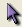

__________________________________
To modify the parameters of station select this icon  and make a double click on the station that you want modify. In this way the properties panel of a station is shown and the modifications could be applied. To see a complete list of properties of each station see "Define network topology".